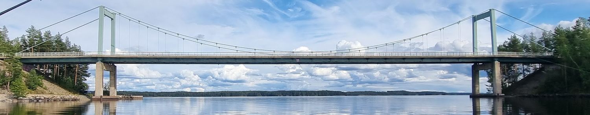
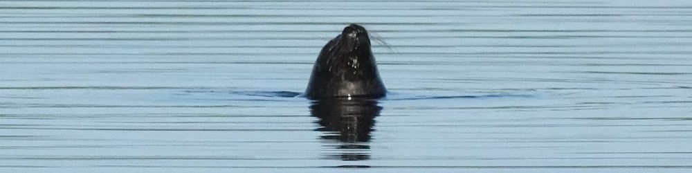

Kaavoitus
Yli 20 vuoden kokemus on opettanut millainen kaava kestää oikeudellisen arvioinnin ja kuinka suuri merkitys osallisten kannalta on selkeydellä valituskierteen välttämiseksi. PlanDisain pyrkii olemaan näiltä osin edelläkävijä.
Palvelut

Yli 20 vuoden kokemus on opettanut millainen kaava kestää oikeudellisen arvioinnin ja kuinka suuri merkitys osallisten kannalta on selkeydellä valituskierteen välttämiseksi. PlanDisain pyrkii olemaan näiltä osin edelläkävijä.
Käytännön asiantuntemusta digitaalisten ratkaisujen kehittämisestä ja käyttöönotosta. Tuki RYHTI-uudistuksen lakisääteisten velvoitteiden toteuttamisessa.

Osallistuminen toimii vain, kun ihmiset ymmärtävät mistä puhutaan. PlanDisain hoitaa vuorovaikutuksen selkeällä kielellä — ilman ammattislangia, avoimesti ja aidosti.
Yritys
PlanDisain on kaavoitukseen erikoistunut asiantuntijatoimija. Vuosien kokemus kymmenistä kaavoista on osoittanut, että kaavoja voidaan tehdä selkeästi tai sekavasti. Vaikka prosessit voivat olla monimutkaisia, niin tavoittelemme selkeyttä kaikessa.
Kaavoitusta tukevat digitaaliset menetelmät ja vuorovaikutus, jossa ei tukeuduta vaikeasti ymmärrettävään jargoniin. PlanDisain pyrkii olemaan paras kaikessa mihin ryhtyy.
Vuorovaikutus
Kaava koskettaa ihmisten arkea. Siksi se pitää voida ymmärtää ilman ammattislangia.
Referenssit